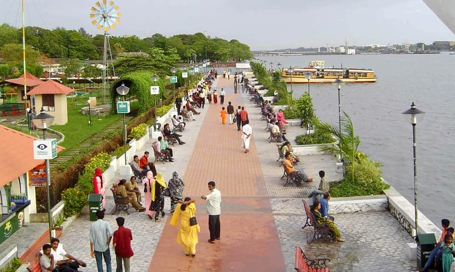
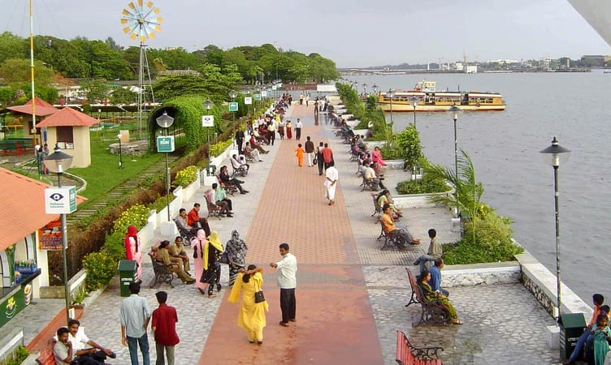

KOCHI
Kochi is also known by its former name Cochin is a major port city on the Malabar Coast of India bordering the Laccadive Sea. It is part of the district of Ernakulam in the state of Kerala and is commonly referred to as Ernakulam. Kochi is the most densely populated city in Kerala. As of 2011, it has a corporation limit population of 677,381 within an area of 94.88 km2 and a total urban population of more than of 2.1 million within an area of 440 km2, making it the largest and the most populous metropolitan area in Kerala. Kochi city is also part of the Greater Cochin region and is classified as a Tier-II city by the Government of India. The civic body that governs the city is the Kochi Municipal Corporation, which was constituted in the year 1967, and the statutory bodies that oversee its development are the Greater Cochin Development Authority (GCDA) and the Goshree Islands Development Authority (GIDA).The current metropolitan limits of Kochi include the mainland Ernakulam, Fort Kochi, the suburbs of Edapally, Kalamassery, Aluva and Kakkanad to the northeast; Tripunithura to the southeast; and a group of islands closely scattered in the Vembanad Lake Called the "Queen of the Arabian Sea," Kochi was an important spice trading center on the west coast of India from the 14th century onward, and maintained a trade network with Arab merchants from the pre-Islamic era. In 1505, the Portuguese established trading ports in Cochin. There are still buildings like the Old Harbour House from this period, some of which have been renovated in more recent times. The Kingdom of Cochin allied with the Ming Dynasty, Portuguese, and Dutch and became a princely state of the British. Kochi ranks first in the total number of international and domestic tourist arrivals in Kerala.The city was ranked the sixth best tourist destination in India according to a survey conducted by the Nielsen Company on behalf of the Outlook Traveller magazine.In October 2019, Kochi was ranked seventh in Lonely Planet's list of top 10 cities in the world to visit in 2020.Kochi was one of the 28 Indian cities among the emerging 440 global cities that will contribute 50% of the world GDP by 2025, in a 2011 study done by the McKinsey Global Institute.In July 2018, Kochi was ranked the topmost emerging future megacity in India by global professional services firm JLL.Kochi is the only city in the country to have water metro system along with the metro rail.
GALLERY
 



 BACK TO HOME
BACK TO HOME